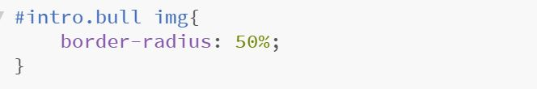
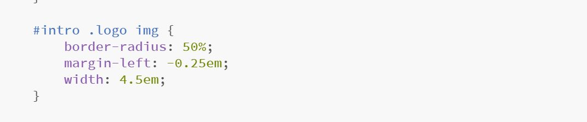
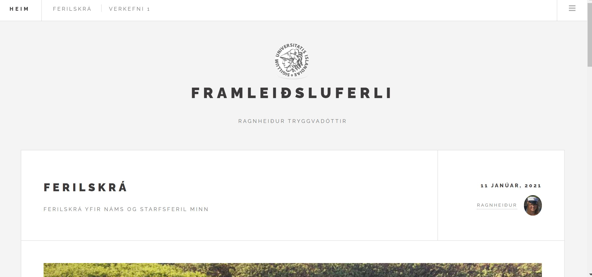
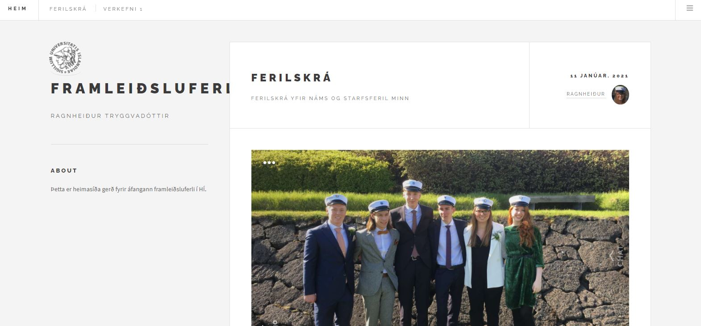
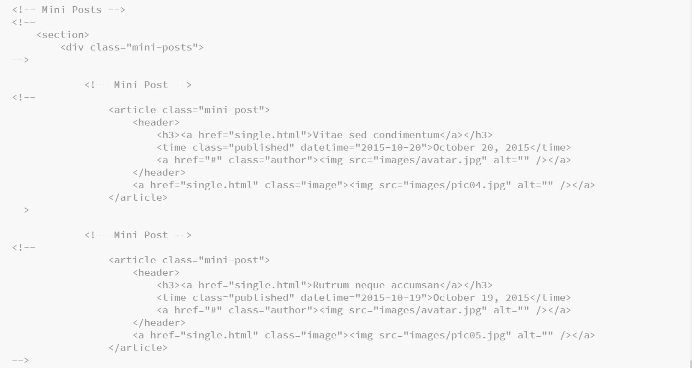

Verkefni 1
Setja upp heimasíðu

Ég notaði sniðmát frá html5up sem heitir "Future Imperfect" linkur á síðu og sótti Brackets til að vinna kóðann. Það gekk frekar vel að setja upp ferilskrá og síður fyrir verkefnin. Ég fylgdi leiðbeiningum úr myndbandi kennara og allt gekk vel. Mesta vesenið var að þurfa að breyta menu á öllum undirsíðum, ég lenti í því að gleyma nokkrum sinnum einni síðu. Ég ákvað svo að breyta titlinum á síðunni en það var pínu vesen af því að ég fann ekki hvar í kóðanum titillinn var. Ég fór í gegnum allann kóðann og fann svo neðst í honum hvar ég gat breytt titlinum. Ég breytti titlinum og ákvað að setja háskólamerkið sem logo í staðinn fyrir tígul sem var í templetinu. Þetta reyndist hinsvegar meiriháttar mál. Þegar ég setti myndina inn var hún tígullaga sem passaði ekki og ég vildi hafa hana hringlaga. Ég tók þá í burtu hlutann af kóðanum sem segir class = "logo" en þá var myndin stór og kassalaga. Ég gat fundið leið til að minnka hana en til að gera hana kringlótta þurfti ég að hætta mér í css kóðann.
Ég horfði aftur á hluta kennslumyndbands og hætti mér svo í css hluta kóðans. Ég notaði ctr F til að finna logo pakkann og reyndi að koma línunni border-radius: 50% inn á réttan stað þar sem netið sagði mér að það væri rétti kóðinni til að gera hringlaga mynd. Ég reyndi að koma því inn á alla staði en ekkert gekk. Ég ákvað þá að búa til nýjan klasa, bull, sem má sjá hér að ofan, og setja inn border-radius: 50% þar en það gekk ekki heldur. Eftir mikla umhugsun og smá hárreitingu komst ég að því að mig vantaði semikommu fyrir aftan skipunina mína. Þegar ég lagaði það í logo mynda klasanum þá virkaði þetta og má sjá kóðann fyrir það hér að neðan
Þegar ég var svo komin langleiðina með verkefnið tók ég eftir því að þegar ég setti heimasíðuna upp á auka skjánum mínum voru hlutföllin ólík og á tölvuskjánum mínum og nafnið á síðunni fór undir fyrstu greinina. Ég vissi ekki alveg hvernig átti að laga þetta og verð að skoða kóðann betur til að komast að því. Hér að neðan má fyrst sjá mynd af því hvernig forsíðan er rétt og fyrir neðan hana má sjá mynd af forsíðunni þegar hlutföllin eru vitlaus.
 Á templetinu sem ég fékk frá html5up voru fleiri greinar og síður sem ég ákvað að kommenta út úr kóðanum fyrir fyrsta verkefnið en stefni svo á að nota þegar líður á önnina. Þetta gerði ég til að einfalda síðuna núna en halda inni öllum síðum og greinum sem fylgdu templetinu. Ég sá að í kóðanum var búið að kommenta út einhverja hluti svo ég var mjög fljót að sjá hvernig það var gert. Það eru líka allir hlutir vel merktir í kóðanum svo það ætti ekki að vera erfitt að finna hvaða hluta ég á að setja aftur inn þegar kemur að því. Á mynd hér að neðan má sjá hvernig ég kommenta út kóðann, ég hinsvegar hef ekki lært að setja táknin hér í textan án þess að kommenta þann texta út. Ég komst svo að því að ef ég ætlaði að kommenta út margar línur af kóða í einu þá lenti ég í vandræðum þar sem það virtist virka þannig að ef --> var í kóðanum sem ég var að kommenta út, td í skýringu á undna kóðanum þá hætti kommentið mitt þar. Ég kommentaði því út hvern hlut fyrir sig, sem skapaði meiri vinnu fyrir mig núna en gerir það einnig auðveldara fyrir mig að sækja aftur kóðabúta sem ég þarf.
Þegar kom að því að setja síðuna upp á Githup fylgdi ég myndbandi frá kennara. Ég lenti í smá vandræðum en leysti þau með hjálp stackoverflow. Þá gekk allt vel í framhaldi og síðan er komin í loftið.